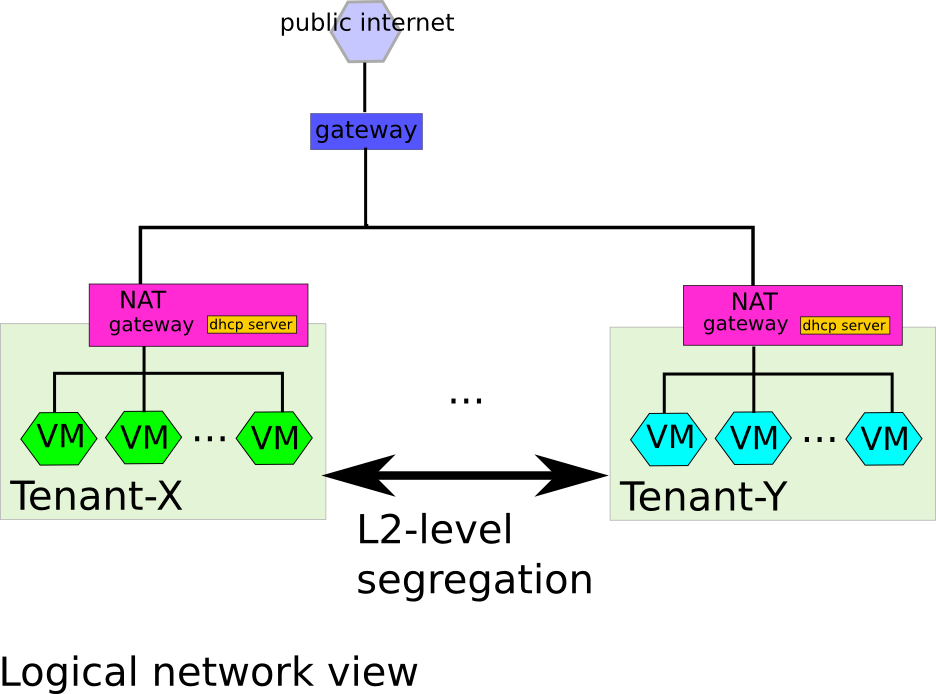
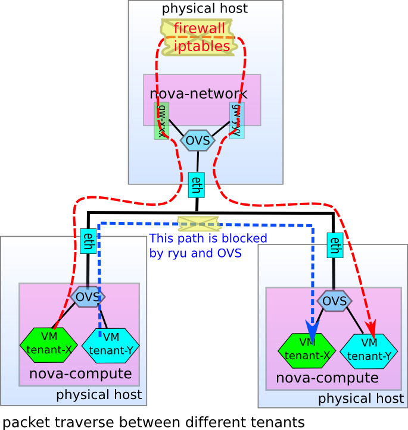
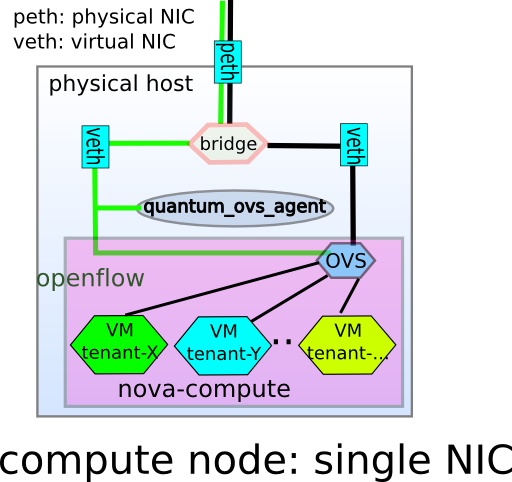

Using Ryu Network Operating System with OpenStack as OpenFlow controller¶
This section describes how to setup openstack (nova, quantum) and ryu-manager. It is assumed that kvm with libvirt is used and each host machines that run nova-compute/nova-network has two physical NICs. It would be possible to deploy it with single NIC machines as described at the last section.
NOTE: How to use nova isn’t described in this document.
Overview¶
Ryu is designed/implemented with for production use in mind, so it cooperates very well with OpenStack . With nova and quantum OVS plugin, Ryu provides L2 segregation of Multi-tenants without any switch feature/settings like VLAN. So it’s very easy to use/experiment/deploy this segregation as the below figure.

Physical machine setup¶
The following figure depicts how physical hosts are connected and each daemons are deployed.

Although the nova-api, nova-scheduler, nova-network and related openstack daemons are installed in each own physical machines in the above picture, they can be installed on a physical machine which also runs nova-compute. Each host machine has two nics and one is connected to management LAN and other is connected to deployment LAN.
How to install/setup¶
If you are not familiar with installing/setting up nova/quantum/openvswitch from the source, please refer to OpenStack document and get back here again. [ OpenStack docs , Nova , Quantum , OpenvSwtich and Quantum Part 1 , OpenvSwtich and Quantum Part 2 , OVS Quantum Plugin Documentation ]
- Install ryu and run ryu-manager
- install ryu from the source code on the hosts on which you run
- nova-compute,
- quantum-server and
- ryu-manager.
This is because quantum-server and ova quantum agent which runs on nova-compute node needs ryu-client library to communicate ryu-manager.
Type in ryu source directory:
% python ./setup.py install
edit /etc/ryu/ryu.conf on the host on which you run ryu-manager if necessary
No configuration is needed on hosts that runs quantum and ovs quantum agent.
run ryu network os:
% ryu-manager [----flagfile /etc/ryu/ryu.conf]
- get nova source and quantum source from github
They are a bit modified from openstack master tree. They are available at github for convinience
clone them by typing the followings in an appropriate directory:
% git clone git://github.com/osrg/nova.git % git clone git://github.com/osrg/quantum.git
If you prefer https, try those:
% git clone https://github.com/osrg/nova.git % git clone https://github.com/osrg/quantum.git
Install nova and quantum as usual. (And other Openstack related component if necessary. e.g. glance)
Each daemons can be installed in a single machine or in different machines. Please refer to Openstack documentation for details. You may want to set up multiple nova-compute nodes for interesting use case.
Setup nova daemons. (Edit nova.conf) Specifically configure nova-network and nova-compute
- configure nova-network
- –fixed_ranges=<setup here>
- –network_size=<setup here>
- –network_manager=nova.network.quantum.manager.QuantumManager
- –quantum_connection_host=<quantum server ip address>
- –firewall_driver=quantum.plugins.ryu.nova.firewall.NopFirewallDriver
- –quantum_use_dhcp
NOP firewall driver is newly introduced for demonstrating Ryu capability. If you want, other existing firewall driver can be specified. But such specification don’t have any effect in fact because ryu directly controls packets to VM instance via OVS bypassing netfilter/iptables.
- –linuxnet_interface_driver=quantum.plugins.ryu.nova.linux_net.LinuxOVSRyuInterfaceDriver
- –linuxnet_ovs_ryu_api_host=<IP address of ryu server>:<Ryu rest API port>
set up OVS on each nova-compute node
If Ubuntu is used, you can install it from packages as openvswitch-datapath-dkms, openvswitch-common, openvswitch-switch If you already use bridge, you may need to edit /etc/modules to load openvswitch kernel module, openvswitch_mod and brcompat_mod, before bridge module and reboot to unload bridge module.
And then create ovs bridge:
# ovs-vsctl add-br <bridge name: usually br-int>And if you connect NIC to OVS bridge.:
# ovs-vsctl add-port <bridge name:br-int> <ether interface: e.g. eth<N>>- configure each nova-compute
- –libvirt_type=kvm
- –libvirt_ovs_integration_bridge=<OVS bridge:br-int>
- –libvirt_vif_type=ethernet
- –libvirt_vif_driver=quantum.plugins.ryu.nova.vif.LibvirtOpenVswitchOFPRyuDriver
- –libvirt_ovs_ryu_api_host=<IP address of ryu server>:<Ryu rest API port>
- install quantum server and have quantum to use OVS pluging
- Edit [PLUGIN] section of /etc/quantum/plugins.ini
- provider = quantum.plugins.ryu.ryu_quantum_plugin.RyuQuantumPlugin
Edit [DATABASE] and [OVS] section of /etc/quantum/plugins/ryu/ryu.ini
- [DATABASE] section
- sql_connection = <sql connection to your db>
- [OVS] section
- integration-bridge = <OVS bridge name: br-int>
- openflow-controller = <ryu-manager IP address>:<ryu openflow port: default 6633>
- openflow-rest-api = <ryu-manager IP address>:<RYU reset API port: default 8080>
- [DATABASE] section
Run quantum server
- install quantum OVS agent on each nova-compute node
Edit /etc/quantum/plugins/ryu/ryu.ini
copy the ryu_quantum_agent.py into nova-compute/network node.
The agent isn’t installed by setup.py so that you have to copy it manually. ryu_quantum_agent.py is located at <quantum source base>/quantum/plugins/ryu/agent/ryu_quantum_agent.py
Run ryu agent:
# ryu_quantum_agent.py -v /etc/quantum/plugins/ryu/ryu.ini
Then as usual openstack nova operation, create user, project, network and run instances.
Enjoy!
Testing¶
Yay, now you have ryu network Operating System set up. You would want to really they are L2-segregated.
- create multi projects and run instances.
- ping/traceroute between them.
- tcpdump in the instances
The routing between gateway(gw-xxx) of each tenants are disabled by nova.network.linux_net.LinuxOVSOFInterfaceDriver by installing iptables rule on nova-network host:
# iptable -t filter -A nova-network-FORWARD --in-interface gw-+ --out-interface gw-+
Thus pinging/tracerouting between VMs in distinct tenants doesn’t work. If you drop the above rule by:
# iptable -t filter -D nova-network-FORWARD --in-interface gw-+ --out-interface gw-+
You will see ping/tracerout works. Please notice that the packets go through gw-xxx and gw-yyy, not directly.

Caveats¶
- Run the following daemons in this order
- Run Ryu network Operating System
- Run quantum with Ryu plugin
- Run quantum Ryu agent
- run your guest instance
For now, ryu-manager doesn’t have persistent store, so if it’s rebooted, all the necessary information must be told again from quantum server/agent.
nova-manage network delete doesn’t work
At this moment, quantum doesn’t implement network delete fully yet. If you issue the command, it fails. And you need to fix nova/quantum DB by hand using SQL.
Appendix¶
In the above, two physical NIC deployment is described. Some people may want to use those settings with single NIC machine or even with single machine. It would be possible as the following pictures, but we haven’t tested those setting. If you success it, please report it.
single NIC setup¶
If your host machines have only single NIC, it would be possible to use Ryu network Operating System with Linux bridge. However we haven’t tested such setups.

All-in-One Setup¶
You can also setup in single physical host as the following picture.

You can setup the above environment quickly using DevStack.
Install Ubuntu 11.10 (Oneiric)
Download Ryu enabled DevStack from github
% git clone git://github.com/osrg/devstack.gitStart the install
% cd devstack; ./stack.shIt will take a few minutes.